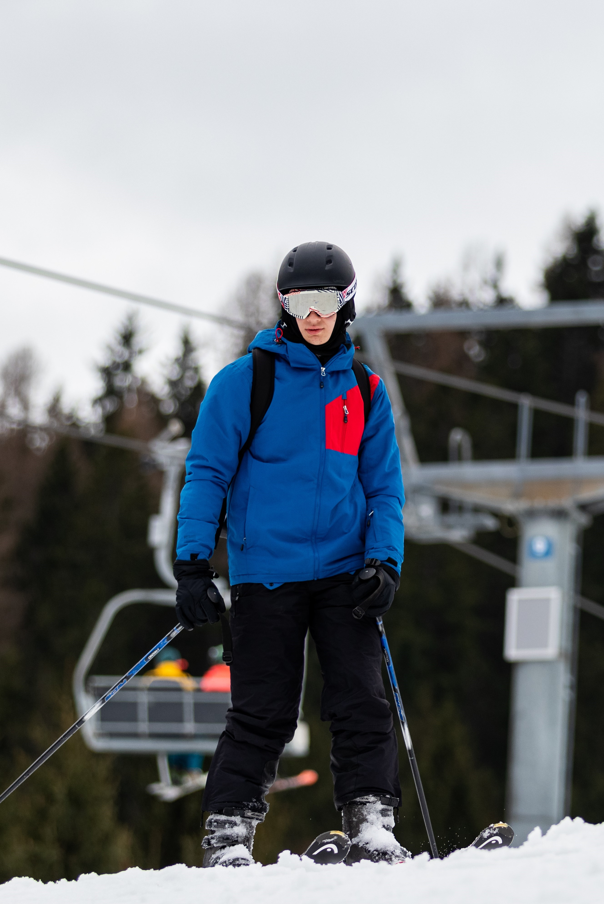

Hobbik


A fő hobbim a zenélés, amivel igazán általános iskolában kezdtem foglalkozni, amikor elkezdtem zongorázni tanulni. Zeneiskolában nyolc évet zongoráztam, a mai napig ez egy nagyon kedvelt tevékenységem. Körülbelül három éve kezdtem el basszusgitározni, ami az egyik legfőbb hobbimmá nőtte ki magát, hosszú ideig gondolkoztam azon, hogy a zenei pályán tanuljak tovább. Emellett számítógépen is szerzek zenét egy DAW-val, és a terveim között szerepel, hogy a jövőben a zenével hivatásszerűen is foglalkozzak. A zene mellett szeretek sportolni is, tanultam teniszezni, amiből diákolimpián is indultam, kiskoromban évekig judoztam, de a kedvenc sportom az elmúlt pár évben a síelés lett.